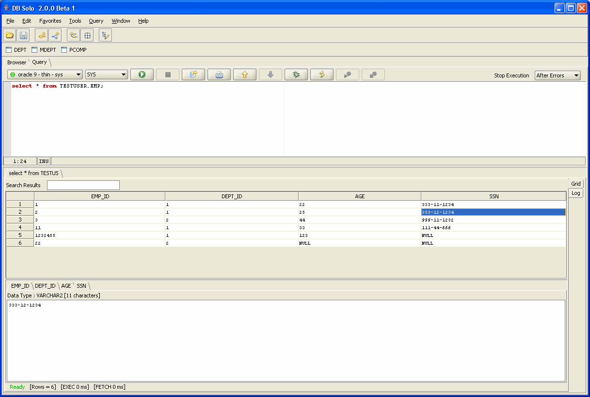
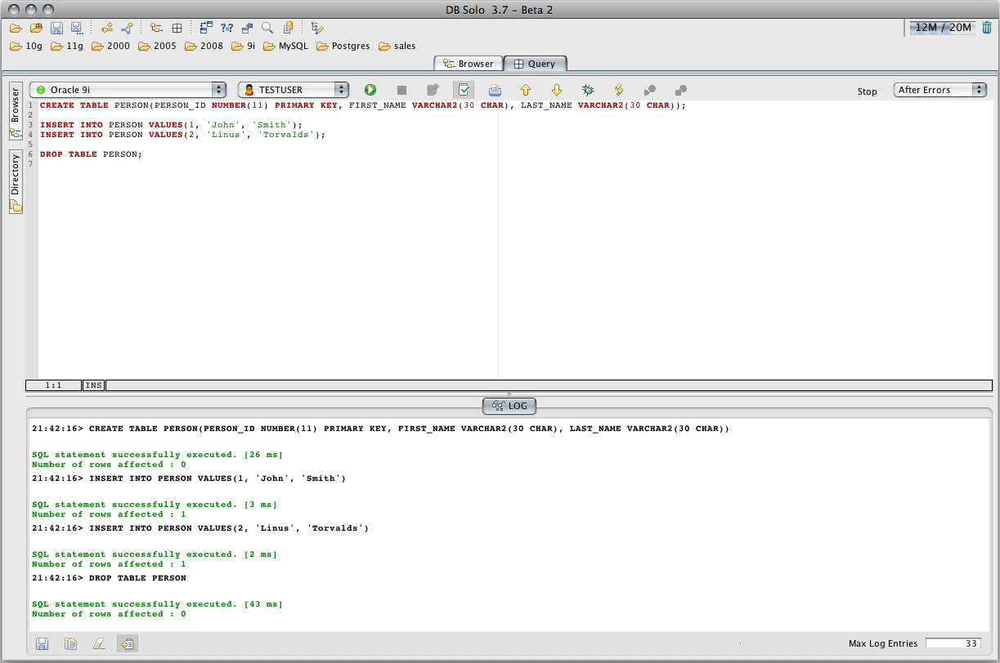
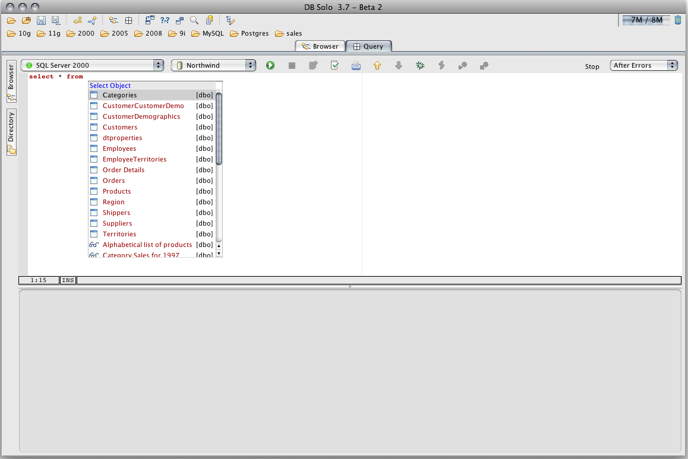
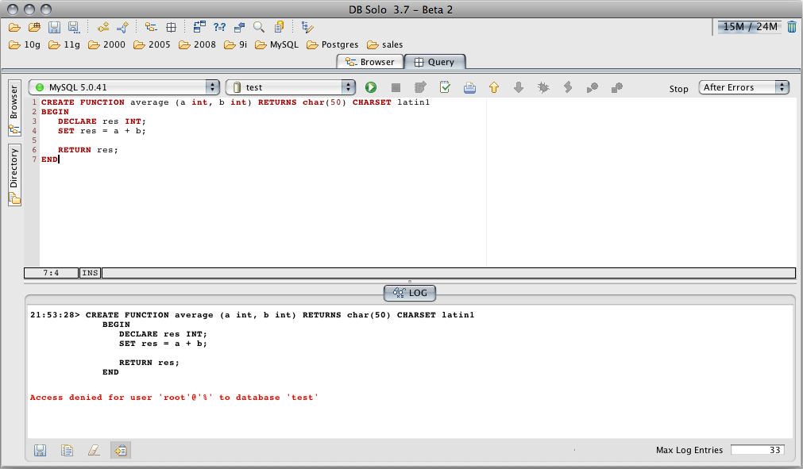
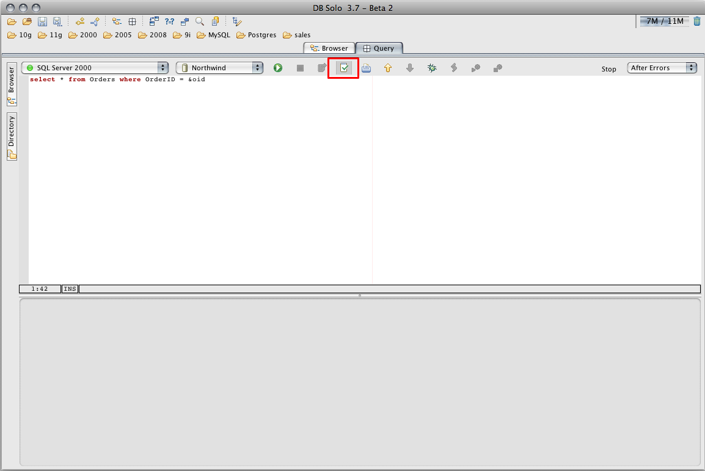
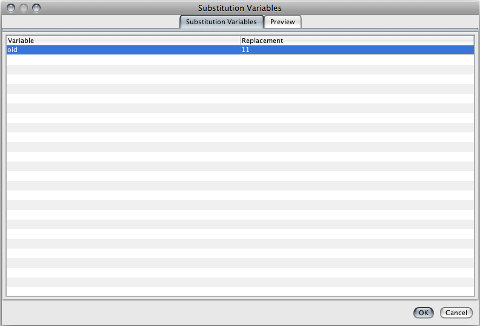
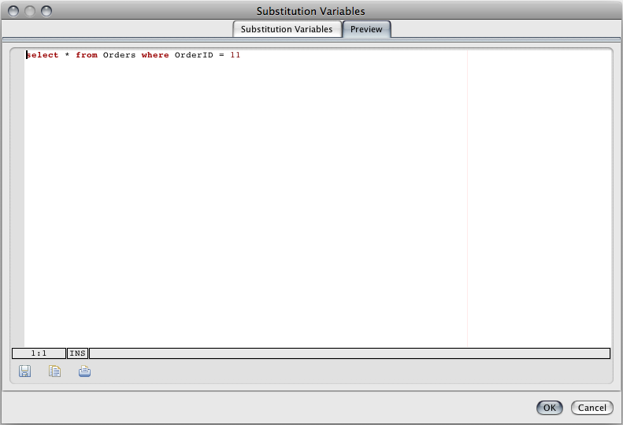
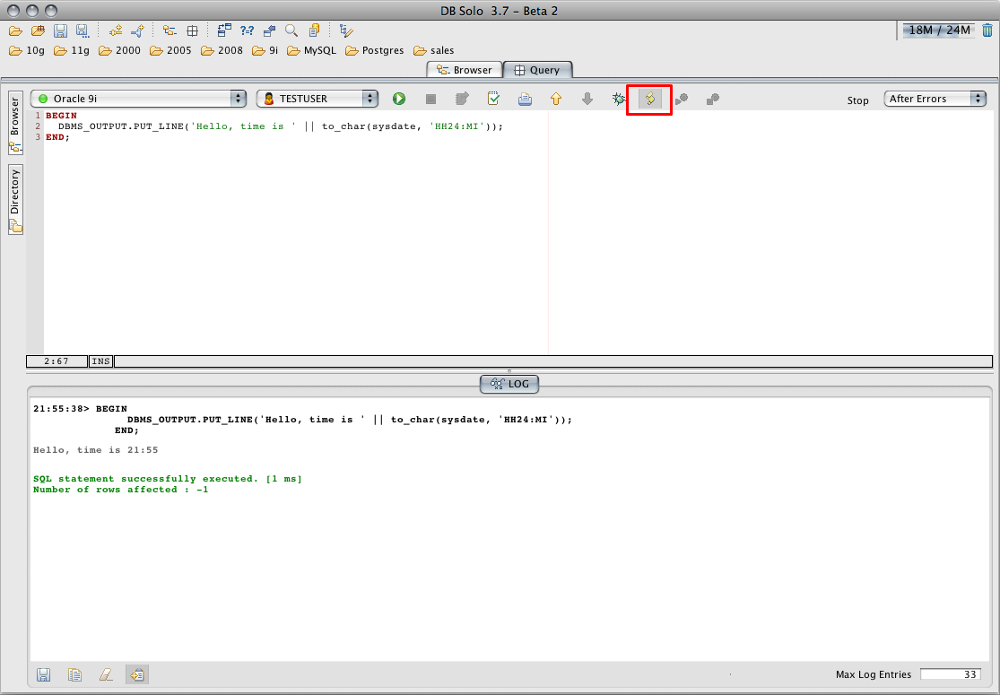
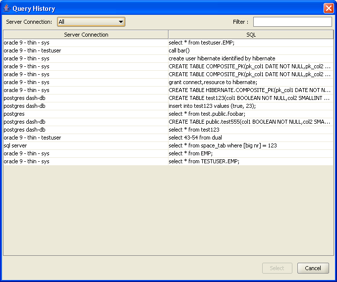

DB Solo's Query Editor allows you to execute SQL Statements and create and edit stored procedures. It has support for auto-completion, multiple SQL statements, substitution variables, DBMS_OUTPUT and explain plan. DB Solo has built-in stored procedure editors for Oracle, Sybase ASE and SQL Server, but you should use the Query Editor to create and edit stored procedures for other databases.
The toolbar of the Query Editor has two or three combo boxes for selecting the current server connection, database and schema. The exact number of combo boxes depends on the currently selected server connection. For example, Oracle connections only have two combo boxes, one for the server connection and another one for the schema.
The selected schema will be the 'current' schema when you run your queries. In Oracle, selecting a certain schema from the dropdown is equivalent to issuing the following statement before running the query:
alter session set current_schema=X
where X is the schema selected in the combo box (Notice that you should never need to explicitly issue the above ALTER SESSION statement in the query window). Other databases also have similar command issued before your queries are run.
Below screen, Query Results, displays the results of a simple SELECT query. Middle section of the query window displays all the rows returned from your query. Bottom section displays details on the selected cell within the results. If you select more than one cell form the result grid, the detail panel will show you statistics on your selection. You can hide/show the detail panel by clicking on the corresponding toggle-button or by pressing Ctrl-Alt-D. For example, if you select numeric cells, the detail panel shows you statistics on the selected values such as MIN, MAX, and AVG. If you have executed more than one query in the query window, the middle part will contain a tab for each query. You can view the results of each query in their respective tabs.
A search is also available within the query window. This allows you to quickly search for a specific value within the result set.

Figure - Query Results
The Query Editor supports running multiple statements at once. The statements can be queries or DML/DDL statements, or a combination of them. The statements must be separated by either semicolon or the 'GO' keyword. You can change the settings to only use a semicolon or 'GO' as statement separator instead of the default setting which accepts either one. When you have more than one statement in the Query Editor, DB Solo will send them to your server one at a time. The 'Stop' drop down dictates what happens when an error or a warning is encountered when running a statement. By default, it is set to 'After Errors' which means statements after a failed statement will not be executed at all. Other possible values are 'After Warnings' and 'Never'. When 'Never' is selected, a failed statement will not stop the subsequent statements from being executed. In most cases the default setting 'After Errors' is the most appropriate setting. If your statements are solely DML/DDL statements or queries that return no rows, the results panel will only contain the 'LOG' tab that shows you the queries that were executed and their execution times. If you queries return rows, the results panel will add a tab for each result set returned by your queries. Notice that some databases, such as SQL Server', can return more than one result set from a single query.

If the Query Editor window contains multiple statements separated by semicolons or 'GO' statements, and you wish to only run the statement under the cursor, you can do it by selecting Query/Execute Current from the main menu or by hitting F5. If your Query Editor only has one statement, 'Execute Current' functions the same way as the standard 'Execute' action (Ctrl-Enter).
The auto-completion allows you to write queries more efficiently by providing completion suggestions as you type in your queries. This feature supports the most common SQL statements including SELECT, UPDATE, INSERT, DELETE and others. The auto-completion popup will automatically appear after you type in a space or a period, provided you are in a location where auto-completion can provide a suggestion. You can also force the auto-completion popup by pressing Ctrl-Shift-Space. If you wish not to use the auto-completion feature, you can disble it in Settings/Query Editor/Editor.

DB Solo has built-in procedure editors for Oracle, SQL Server and Sybase, but you need to use the Query Editor to create/edit procedures for other databases, such as Postgres or MySQL. Many times procedures contains multiple statements separated by semicolons and since DB Solo by default uses semicolons as statement separators, you cannot simply use the 'Execute Query' button since DB Solo would try to break your procedure into multiple separate statements and send them to the server one at a time. Instead, you need to use the Query/Execute SQL Buffer As-Is menu item or type Ctrl-Space which will send the entire contents of the Query Editor to your server in one chunk. Alternatively, you can go to settings and change the default statement separator to 'GO' only and make sure your procedure does not have any 'GO' statements. If you do this, you must remember to separate multiple ordinary statements with 'GO' keywords instead of semicolons.

Often times you want to keep the results of one query around as a reference while executing other queries. Each result set in the results panel has a button named 'Pin this result set' that allows you to do that. Once the button is selected, the result set in question will be preserved even after you execute other queries. The icon in the tabbed pane will reflect the fact that a result set is pinned, allowing you to easily identify result sets that were pinned. If you wish not to keep your pinned result set around anymore, simply click on the 'Pin' button again and next time you run a query the result set in question will not appear anymore.
The Query Editor allows you to write generic queries that contain substitution variables that will be replaced by actual values when you run the query. To use a substitution variable make sure the 'enable substitution variables' button is pressed before running the query,

The substitution variables must only contain characters and are prefixed by an ampersand as follows
select * from emp where emp_id < &oid;
When you run the query in question ou will be prompted to enter a value for 'oid'.

The variable substitution dialog has a Preview-tab that allows you to view the query as it will be sent to the database.

You can also have default values for substitution variables in your script by using the following syntax
select * from emp where emp_id < &oid[55]
where 55 is the default value you want to specify for your variable. If you don't change the default value, the query will be sent to your server as
select * from emp where emp_id < 55
DB Solo has a built-in procedure editor and debugger for Oracle, so most likely you would not want to use the Query Editor to edit your procedures. However, if you want to run anynymous blocks you must use the Query Editor for that. Often times your anonymous blocks or procedures/functions called from your anonymous block contain calls to the standard Oracle DMBS_OUTPUT package. By default, the output from these calls will not be shown in the results panel. If you want to include the output from DBMS_OUTPUT calls, you must make sure the 'Enable/Disable DBMS_OUTPUT retrieval' toggle-button is selected before you execute the anonymous block. Output from the DBMS_OUTPUT package will be shown in grey font in the 'LOG' tab.

Query history is automatically maintained by DB Solo. The history contains the last 100 (configurable) queries you have executed. To see a list of past queries:

Figure - Query History
| Back to Index |
DB Solo www.dbsolo.com support@dbsolo.com |